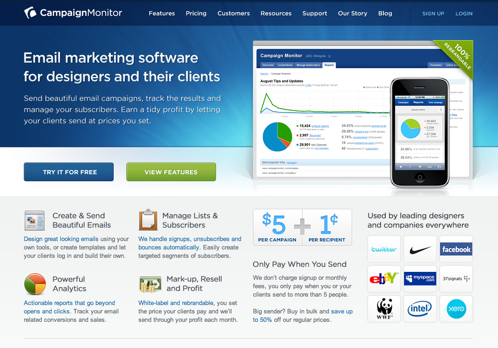

Profitable and Proud: Campaign Monitor
37signals’ Signal vs. Noise is posting a new series highlighting companies that have $1M+ in revenue all without any initial VC investments. The first post in the series features the creator of email marketing software targeted towards web designers, Campaign Monitor. The founders of Campaign Monitor talk about their shift from a web design business to creating and profitably selling a product over six months. Read the full article discussing their culture, challenges, and goals for the future.
At the end of the article they give sound advice to others considering starting a business.
- Don’t make excuses, start building something right now. Ideas are worthless unless they’re executed.
- Never be afraid to charge for your product from day one. If nobody is prepared to pay for it, it’s probably not solving an important problem anyway.
- Avoid additional investors if you can. There’s nothing more satisfying than being in complete control of your destiny.
- Never lose sight of the fact that you’re starting a business to give you more freedom to do what you enjoy in life. Don’t let it consume the very thing you’re aiming to improve.